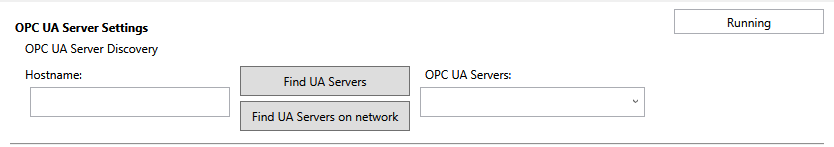
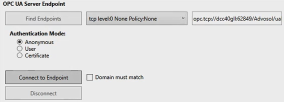
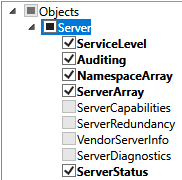
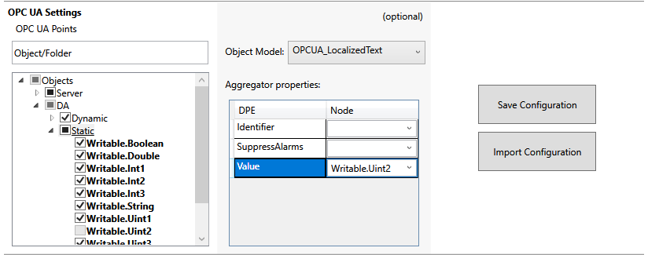
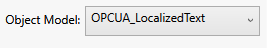
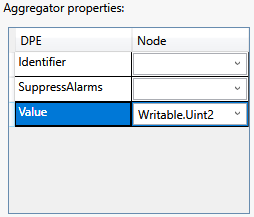

Performing OPC UA Adapter Online Configuration
Scenario: You want use the SORIS OPC UA Configurator tool to retrieve the OPC UA online data to be then discovered in Desigo CC through the OPC UA adapter.

Online engineering is recommended instead if you want to work with OPC UA online data.
Performing an offline configuration is recommended instead if you want to import data into Desigo CC through a JSON file that addresses special configuration requirements.
Workflow diagram:
Prerequisites:
- For customized object models only:
- You created the required customized OPC UA object models. For instructions, see Creating and Configuring an Object Model.
- You set the Alarm.AlarmDPE property for the OPC UA custom object models that you want to have alarms. For more details see OPC UA Library Customization.
NOTE: The configuration of the Alarm.AlarmDPE property must exactly match the configuration in the OPC_UA_HQ_1 library. - You exported the customized OPC UA object models. For instructions, in SORIS, see Export the Object Model.
- You copied manually the exported object models (OWL files) to \AdditionalSW\OPCUA_Configurator\DataModels and \GMSMainProject\AddSW\OPC_UA_Client\DataModels folders.
Steps:
- In the AdditionalSW\OPCUA_Configurator folder of the software distribution available locally or on the installation DVD, double-click OPCUA_Configurator.exe.
- The SORIS OPC UA Configurator page displays.
- In the OPC UA Server Discovery section, do one of the following:
- To discover OPC UA servers locally, click Find UA Servers.
NOTE: By default, in the Hostname field, localhost is set. - To discover OPC UA servers over the network on a specific station, in the Hostname field, specify a hostname different from localhost, and click Find UA Servers on network.
- The discovered OPC UA servers appear in the drop-down list on the right.
- From the drop-down list, select the OPC UA sever whose configuration you want to set.

NOTICE

In case of issues with the discovery, copy and paste the OPC UA server address (URL) into the OPC UA Servers drop-down list. It is also recommended to install the OPC UA client from an Intranet and not from Internet.
- In the OPC UA Server Endpoint section, click Find Endpoints.
- The endpoints available for the selected OPC UA server display in a drop-down list on the right.

- Select the required endpoint from the drop-down list.
- In the Authentication Mode section, specify how to connect to the selected OPC UA server, in one of the following ways:
- To allow anonymous connection, set Anonymous.
- To allow connection through user's credentials, set User and specify username and password.
- To allow connection through signed certificates, do the following:
a. Set Certificate.
b. Click Browse Certificate.
c. Browse and select the client certificate.
d. Click Open. - Click Connect to Endpoint.
- If the certificate domain for the current station must match the OPC UA server domain, select the Domain must match check box.
- If the OPC UA server certificate is invalid, a message asks whether to trust it. Do one of the following:
- Click Cancel, to trust this certificate temporarily for the current work session.
- Click Yes, to trust this certificate permanently.
- The connection to the endpoint is established.
NOTE: Click Disconnect to terminate the connection with the endpoint.
- Select the check boxes that correspond to the individual variable objects whose data you want to include in the configuration file. Alternatively, select the check box that corresponds to any root level or aggregator whose variable objects data you want to include in the configuration file.
NOTE: Objects in bold type correspond to variables with a value in Desigo CC, which you can select for the import. OPC UA objects with a gray check box do not contain variables, consequently they cannot be selected for the import. 
- Any configured aggregator is highlighted by underlined text.
- To refresh the configuration and retrieve the latest field data, right-click any of the nodes and click Refresh.
- If required, set the points advanced configuration. For instructions, see Setting the OPC UA Advanced Configuration.
- (Optional) Configure the aggregators as follows:
a. In the OPC UA Settings section, expand the desired root level for example, Objects), and select a folder (for example, Static).
b. (Optional) Select the required Object Model from the drop-down list. For example, OPCUA_LocalizedText.
NOTE: This list contains the exported object models manually copied to \AdditionalSW\OPCUA_Configurator\DataModels folder.
If you do not want an aggregator to show a specific value, leave empty the Object Model field.
To reset the Object Model field, in the drop-down list, select an empty row.
c. (Optional) In the Aggregator Properties section, select a DPE included in the object model, and for the selected property, from the Node drop-down list, select the appropriate value that corresponds to the matching node in the tree under the aggregator.
NOTE: In Desigo CC, this is the value that will be displayed for the selected property. For example, DPE = Value; Node = Writable.Uint2. To reset the DPE field, in the drop-down list, select an empty row.
d. Repeat the previous substeps all the aggregators to be set.
To save the current settings to a file, do the following:
- In the OPC UA Settings section, click Save Configuration.
- The Save as dialog box opens to the destination folder: \\SORIS OPC UA Adapter\Configurations.
- Do one of the following:
- To save the setting in a new JSON file, enter a new file name.
- To save the setting in an existing JSON file, select it.
- Click Save.
- Click OK.
- If you saved the settings to a new file, a new JSON file is created in the destination folder. If you saved the settings to an existing file, this JSON file is overwritten. This configuration will be then discovered in Desigo CC through the OPC UA adapter.
NOTE: A JSON file is created or updated for each configured OPC UA server. When working with multiple OPC UA servers, configure and then save each configuration to the specific JSON files. Furthermore, each time a JSON file is saved, the AlarmTable.conf file is re-created and includes the latest alarm configuration (points advanced configuration).